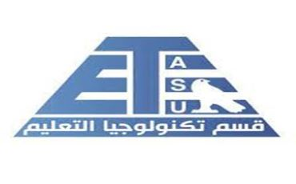
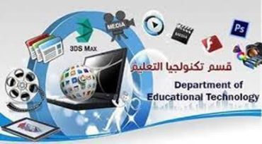

اخبار قسم تكنولوجيا التعليم

أن تكنولوجيا التعلــيم جزء لا يتجزأ عن الممارسات التربوية والتعليمية داخل المؤسسات التعليمية ، وتوفير بيئات تعليمــة تكنولوجية تفاعلية يكون فيها للطلاب والمعلمون القدرة على تصميم و استخدام وإدارة كافة المستحدثات التكنولوجية التي تسهم في حل المشكلات التعليمية ، وزيادة كفاءة وفاعلية عملية التعليم والتعلم
رسالة القسم
العمل على توعيــة وإعداد وتدريــب الطلاب والباحثيــن في تخصص تكنولوجيــا التعليم على تصميــم وإنتــاج واستخــدام وإدارة وتقويم مستحدثات تكنولوجيا التعليم والتعلم بصورتها التقليدية والالكترونية وبما يسهم في حل المشكلات التعليمية والعمل على تحسين وتطوير المخرجات التعليمية وبما يتفق مع معايير وأهداف الجودة.
يعد قسم تكنولوجيا التعليم من أهم الأقسام بكليات التربية والتربية النوعية ، ولكن كانت النظرة له نظرة ضيقة ومحدودة فكان البعض ينظر لتكنولوجيا التعليم بأنه مجرد أجهزة ومعدات ووسائل تعليمية ، ولكن مع التطور السريع والهائل في عصر المعلوماتية والاتصالات وما يشهده العصر من تقنيات وتطبيقات أثرت في كافة نواحي الحياة تطور معها مفهوم تكنولوجيا التعليم ، فالتكنولوجيا عامة تعنى تطبيق المعرفة العلمية لحل المشكلات العلمية فمن ثم تعنى تكنولوجيا التعليم التطبيق المنهجي المنظم للأبحاث والنظريات التجريبية الخاصة بعمليات التعليم والتعلم ومصادر التعلم وتوظيف كافة العناصر البشرية وغير البشرية (المادية) في مجالي التعليم والتعلم لمعالجة المشكلات بهدف تحسين كفاءة التعليم وزيادة فاعليته وتحقيق التعلم المطلوب .
اهداف القسم

وقد شمل قسم تكنولوجيا التعليم على برنامجين لكل منهم أهدافه التي يسعى لتحقيقها و هي
(1) أهداف برنامج إعداد اخصائي تكنولوجيا التعليم

يهدف هذا البرنامـج إلى إعداد أخصائي تكنولوجيا تعليم لمراحل التعليم المختلفة إعداداً مهنياً وإكسابه مجموعة من المعارف والمهارات والقيم التي تؤهله للتدريس والمشاركة المجتمعية والإبداع في مجال التخصص والتعلم الذاتي والمنافسة في سوق العمل وفى نهاية برنامج تكنولوجيا التعليم يصبح الخريج قادر على أن:
1- يصمم مواقف ومصادر التعلم في ضوء الإستراتيجيات التعليمية وتوظيف المستحدثات التكنولوجية المناسبة لكل موقف
2- تطوير مصادر التعلم بما يتناسب مع طبيعة الموقف التعليمي والإمكانات المتاحة وفى ضوء نتائج عمليات التقويم واحتياجات العملية التعليمية ومعايير الجودة الشاملة
3- استخدام وتوظيف وسائل تكنولوجيا التعليم ومصادر التعلم في المواقف التعليمية المختلفة لتسهيل عمليتي التعليم والتعلم
4- تقويم مصادر التعلم باستخدام أدوات التقويم المناسبة وفى ضوء المصطلحات الخاصة بالتقويم في تكنولوجيا التعليم
5- إدارة المواقف التعليمية ومصادر التعلم وعمليات إتاحة المعلومات والمستحدثات التكنولوجية
6- إدارة العمليات الإلكترونية لمركز مصادر التعلم
7- يوظف كافة العناصر البشرية والمادية في مجالي التعليم والتعلم لتحسين كفاءة التعليم وزيادة فاعليته وتحقيق التعلم المطلوب
8- توظيف أساليب واستراتيجيات التعليم والتعلم الالكتروني والتعليم عن بعد داخل المؤسسات التعليمية
9- توظيف كافة المستحدثات التكنولوجية لحل مشكلات التعلم لذوى الاحتياجات الخاصة.
لمزيد من المعلومات اضغط هنا
لقاء مع عضو هيئة التدريس د/محمد الشربينى